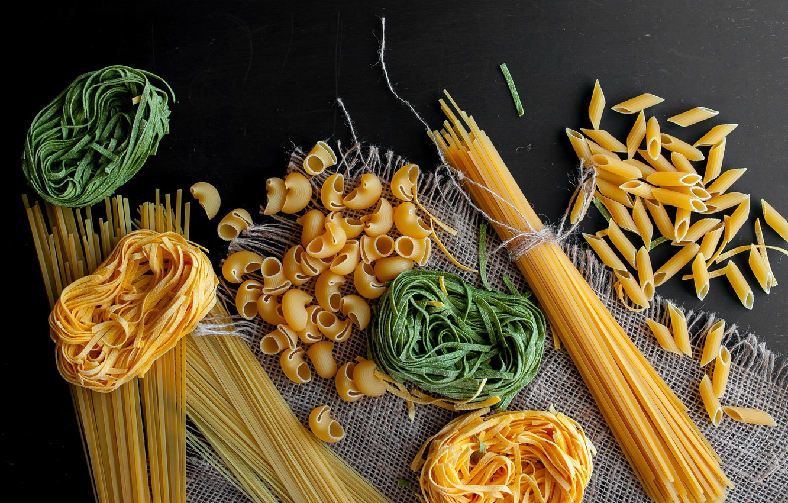
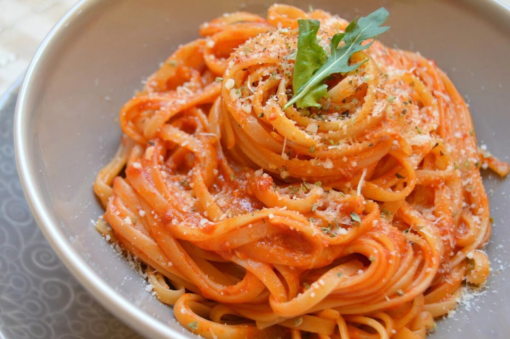
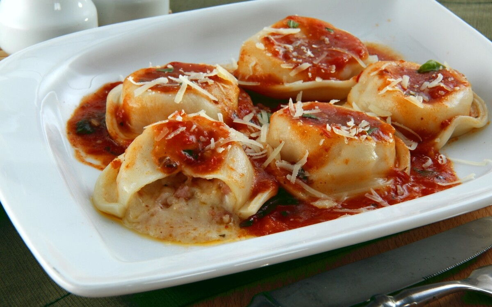

Ñoquis de papa
Ingredientes- 1 kilo de papas
- 2 cucharadas de sal gruesa
- 1 huevo
- 1 yema
- Cantidad a gusto de sal, pimienta y nuez moscada
- 1 cucharada de polvo para hornear
- 350 g de harina y extra
- 1 chorrito de aceitel
- Llenar una cacerola con agua fría y agregar las papas y la mitad de la sal gruesa. Hervir 20 minutos, o hasta que las papas estén tiernas. Escurrirlas y dejarlas enfriar un poquito (no del todo).
- Hacer un puré.
- En un bowl, formar una corona con el puré. Agregar en el centro los huevos, sal, pimienta, nuez moscada y el polvo leudante. Incorporar la harina de a poco, y una con las manos, ayudándose con una espátula, de afuera hacia adentro, hasta formar una masa homogénea.
- Hacer rollitos con la masa de un centímetro y medio de grosor. Cortarlos en trocitos de 2 centímetros y darles la forma clásica con el marcador de ñoquis, o con el tenedor.
- Cocinar los ñoquis en agua hirviendo con un chorrito de aceite y la sal gruesa restante. Estarán listos cuando suban a la superficie. Retirarlos con una espumadera. Servir solos o con la salsa que se desee.

Procedimiento
Tallarines con salsa napolitana
Ingredientes- 1 Caldito de verduras en cubo Knorr (el clásico, de 9,5 gramos)
- 500 gramos de Tallarines Knorr
- 5 litros de agua
- 340 gramos de Salsa Lista Napolitana Knorr
- 3 cucharadas de morrón rojo
- 1 diente de ajo
- 1 cucharada de perejil
- 40 gramos de queso parmesano rallado
- ½ taza de tomates cherry
- 1 chorro de aceite
- Disolvé en una cacerola el caldito de verduras en agua hirviendo.
- Cociná los tallarines al dente, según indica el paquete, aproximadamente 9 minutos.
- En una cacerola sudá los morrones rojos, el ajo, los tomates cherry y agregá la salsa napolitana.
- Cociná por 2 minutos, perfumá con el perejil y las aceitunas negras, condimentá y reservá.
- Mezclá la pasta con la salsa y reservá un poco de la misma para decorar el plato junto con el queso parmesano.

Procedimiento
Sorrentinos de jamón y queso
Ingredientes- 300 g de harina 0000
- 3 huevos
- 1 cucharadita de sal
- 200 g de jamón cocido
- 100 g de ricota
- 200 g de mozzarell
- Sal, a gusto
- Hacer un volcán con la harina y colocar en el centro el resto de los ingredientes.
- Mezclar todo desde el centro hacia afuera. Si la masa queda muy seca, agregarle unas gotas de agua.
- Amasar hasta lograr una textura suave y lisa. Tapar el bollo con un repasador apenas húmedo y dejar que repose por lo menos 30 minutos.
- Espolvorear la mesada con un poquito de harina y estirar la masa bien finita.
- Cubrirla con el lienzo húmedo hasta el momento de usar.
- El relleno. Mezclar todos los ingredientes con la mano hasta formar una pasta.
- Cortar círculos de masa de 6 cm con un cortante o con un vasito, pintarlos con huevo batido.
- Poner una bolita de relleno en el centro y cubrir con otra tapa Presionar los bordes bien fuerte para que no se escape el relleno.
- Cocinar los sorrentinos en agua hirviendo con sal, hasta que comiencen a flotar. Retirarlos con espumadera y servirlos con la salsa elegida.

Lasagna
Ingredientes- 24 láminas para lasagna (frescas o secas)
- 500 g de carne picada
- 700 g de salsa de tomate
- 1 cebolla en cubitos
- 300 g de jamón cocido
- 500 g de queso fresco
- 500 g de zapallitos
- 4 cucharadas de aceite
- Cortar los zapallitos y saltearlos en aceite y salpimentar.
- Saltear con 2 cucharadas de aceite la cebolla picada. Sumar la carne y salpimentar. Revolver y cocinar hasta que la carne cambie de color.
- En una placa profunda colocar una base de salsa. Ordenar las láminas de lasagna cubriendo el fondo. Colocar el relleno de carne y cubrir con más láminas.
- Colocar la capa de zapallitos y volver a cubrir con masa.
- Tapizar con jamón y la mitad del queso. Cubrir con más láminas de pasta.
- Volcar toda la salsa restante y el queso. Hornear cubierto con papel de aluminio, 30 minutos a fuego bajo. Descubrir, gratinar 10 minutos a fuego alto y servir.